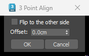

Tools / 3 Point Align
3 Point Align
Move objects by matching three points to three targets.
What it does
3 Point Align moves the selected objects so three points on them land on three points you choose. Point 1 lands on target 1, point 2 on the line from target 1 to target 2, and point 3 in the plane of the three targets.
Click three points on an object, then three targets, and it snaps into place.
How to use it
- Select the objects to move.
- Run 3 Point Align from the 9000 Toolkit category.
- Click three points on the selection, then three points where they should land. The box at the top of the viewport tells you which point is next. Points snap to 3D snaps.
- A small window opens with Flip and Offset. Press OK to keep, or Cancel.

Options
| Setting | What it does |
|---|---|
| Flip to the other side | Turns the objects over to the other side of the plane. |
| Offset | Moves the objects along the plane's normal. |
Good to know
- Every selected object moves together as one.
- Three points on one line are refused.
- Right-click or Esc cancels while picking.
- Undo is one step.